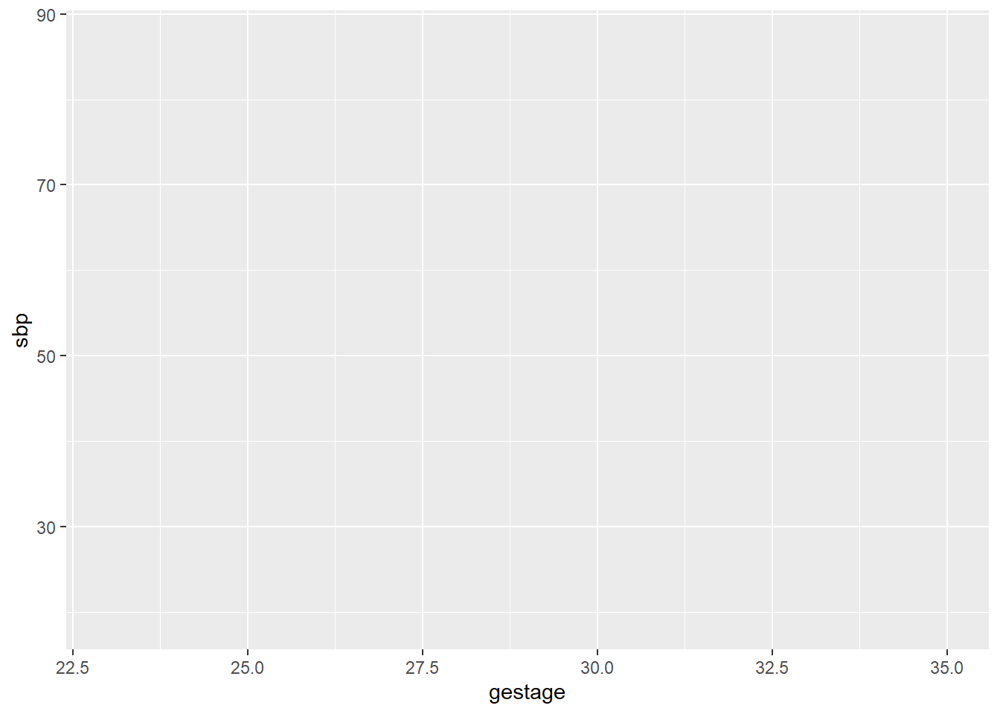
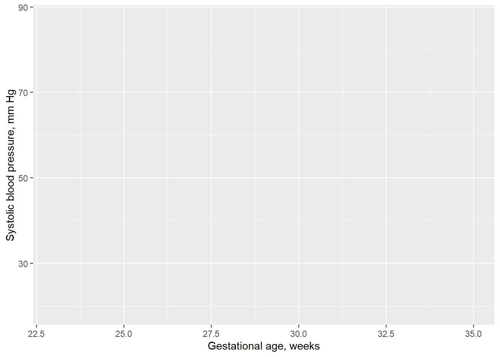
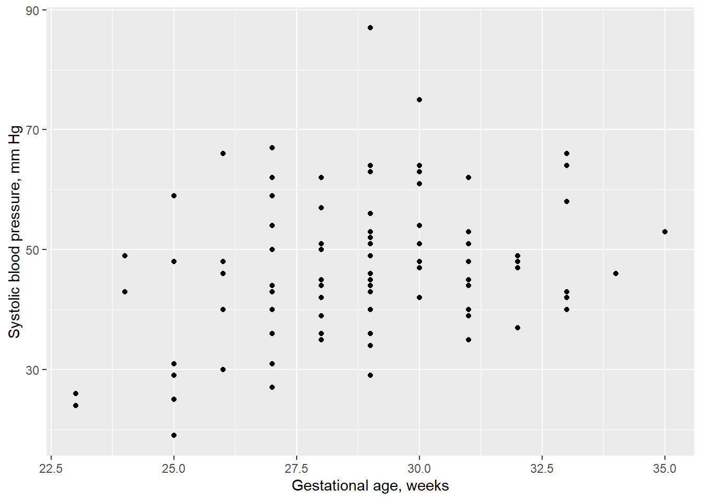
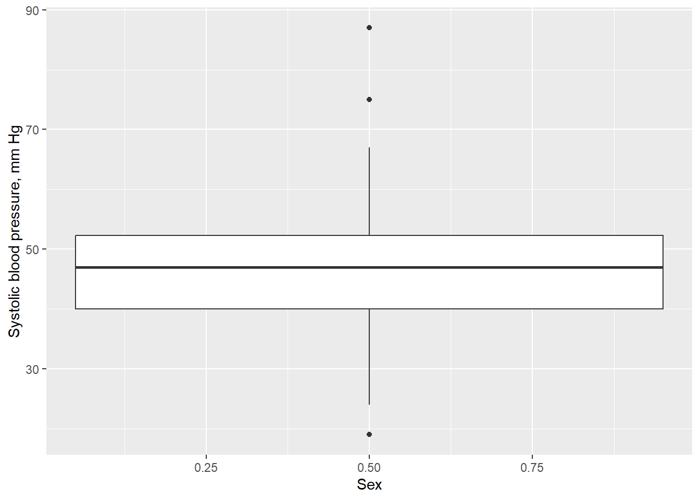

Code
# assign the value of 1 to the object "x"
x <- 1Introduction to R
In the R track of THSS 730, we will use R. To do this, we’ll need to install R and Rstudio. There are two ways to do this: locally or through the cloud. Using the cloud is probably the easiest of the two.
Go to https://posit.cloud/ and click “Get started”
Sign up for “Cloud Free”
Create an account by providing username/password and first/last name
Send me an e-mail with subject line “Invite to posit cloud”. No need to put any text in the body of the e-mail.
I’ll invite you to the THSS 730 workspace when I receive your e-mail, and then you’ll have access to all relevant class materials and the requisite R packages. This is much easier than setting things up locally.
These instructions vary depending on whether you are using a Mac or a Windows PC. Please follow the instructions appropriate for your computer.
To Install R, Open an internet browser and go to https://cloud.r-project.org/
Click on the “Download R for macOS” link at the top of the page.
Click on the file containing the latest version of R, as appropriate for your hardware.
Save the .pkg file, double-click it to open, and follow the installation instructions.
To Install R, Open an internet browser and go to https://cloud.r-project.org/
Click on the “Download R for Windows” link at the top of the page.
Click on the “install R for the first time” link at the top of the page.
Click “Download R for Windows” and save the executable file somewhere on your computer (delete it after you’ve installed).
Run the .exe file and follow the installation instructions.
To Install RStudio
Go to https://posit.co/download/rstudio-desktop/
Click on DOWNLOAD RSTUDIO DESKTOP FOR Your operating system and save the file somewhere on your computer (delete it after you’ve installed)
Run the .exe file and follow the installation instructions.
R is a language of functions.
Functions are just codified ways to generate an output given some input.
Every command you run in R leverages a function, even when it doesn’t look like it.
But, before going further, there are some more hands-on things to cover. First, the primary mechanic of getting things done in R is this:
# assign the value of 1 to the object "x"
x <- 1# multiply x by 2, and assign the result to a new object called y
y <- x * 2Do you need to use specific names for your objects? No. That’s half the fun of it. The way you name your objects can make your code clean and delightful to read, or cause your code reviewers distress. Here’s a nonsense approach to naming things that will be hard to understand.
a_value_of_2 <- 1
wondrous_machinery_of_otters <- exp(a_value_of_2)
print(wondrous_machinery_of_otters)[1] 2.718282None of that made any sense at all, did it? Naming things differently and writing some comments will make a big difference:
# let's get Euler's constant (e = 2.718...) by exponentiating a value of 1
# since the log is the inverse of the exponential function, we start with:
log_eulers_constant <- 1
# Now we'll create Euler's constant by applying the exp() function
eulers_constant <- exp(log_eulers_constant)
print(eulers_constant)[1] 2.718282I know that you know the second option is better. So, be thoughtful about names when you code. Other people who read your code, including your future self, will be very grateful.
You may have noticed this document lets you type things inside of code ‘chunks’, in addition to typing markdown syntax outside of the code chunks. In the code chunk below,
assign the value of 1 to a name x,
create a new value (name it whatever you want) by adding a value of 1 to x.
print the new value. You don’t have to use the print() function to do this, although that is fine if you prefer to. In R, running print(x) is the same thing as just running x
# your code goes hereIn this project, there is a .xlsx file located in the data directory. To bring these data into your computing session, we will use the read_xlsx() function from the readxl package. To call a specific function from a specific package, use the syntax of package::function(). For example,
# read in a dataset and assign it to a reasonable name
data_birth_weight <- readxl::read_xlsx("data/lowbwt.xlsx")
# print the data
data_birth_weight# A tibble: 100 × 6
sbp sex tox grmhem gestage apgar5
<dbl> <dbl> <dbl> <dbl> <dbl> <dbl>
1 43 1 0 0 29 7
2 51 1 0 0 31 8
3 42 0 0 0 33 0
4 39 0 0 0 31 8
5 48 0 1 0 30 7
6 31 1 0 1 25 0
7 31 1 1 0 27 7
8 40 0 0 0 29 9
9 57 0 0 0 28 6
10 64 0 1 0 29 9
# ℹ 90 more rowsOften, you will want to use many functions in a package, and in this circumstance it is easier to load the whole package into your computing session instead of writing the package name over and over again.
# loads readxl for your entire session
# (will need to be re-loaded if you start a new session)
library(readxl)
# now you don't need to write readxl:: in front of its functions
data_birth_weight <- read_xlsx("data/lowbwt.xlsx")Wondering what the text inside of read_xlsx() is, and why it’s surrounded it in quotation marks?
What is "data/lowbwt.xlsx"? The location of the file. This is how read_xlsx knows where the data is. In other words, the read_xlsx() function uses an input ("data/lowbwt.xlsx") to create an output (the data set containing birth weights), and we assign that output to the name data_birth_weight.
Why is “data/lowbwt.xlsx” surrounded by quotations? This is how you create a character value. R allows you to work with characters (i.e., strings), numbers (integers and doubles), dates (e.g., 2024-08-09), and other fun data types like lists and factors (we may cover these later).
You can also create data by hand:
# tibble package has functions to make data
# and print it in a nice, readable format
library(tibble)
# first row is column names (use ~ before each name).
# remaining rows are values
data_baby <- tibble::tribble(
~gestage, ~weight,
39, 3544,
39, 3430,
41, 3770,
35, 2522,
39, 3997,
36, 3530,
41, 3402,
44, 4355,
39, 2977,
39, 3474
)
data_baby# A tibble: 10 × 2
gestage weight
<dbl> <dbl>
1 39 3544
2 39 3430
3 41 3770
4 35 2522
5 39 3997
6 36 3530
7 41 3402
8 44 4355
9 39 2977
10 39 3474To mimic proc contents in SAS, we’ll use glimpse() in R:
glimpse(data_birth_weight)Rows: 100
Columns: 6
$ sbp <dbl> 43, 51, 42, 39, 48, 31, 31, 40, 57, 64, 46, 47, 63, 56, 49, 87…
$ sex <dbl> 1, 1, 0, 0, 0, 1, 1, 0, 0, 0, 0, 0, 0, 0, 1, 1, 0, 0, 0, 0, 1,…
$ tox <dbl> 0, 0, 0, 0, 1, 0, 1, 0, 0, 1, 0, 0, 0, 0, 0, 0, 0, 0, 1, 0, 0,…
$ grmhem <dbl> 0, 0, 0, 0, 0, 1, 0, 0, 0, 0, 0, 1, 0, 0, 0, 0, 0, 0, 0, 0, 0,…
$ gestage <dbl> 29, 31, 33, 31, 30, 25, 27, 29, 28, 29, 26, 30, 29, 29, 29, 29…
$ apgar5 <dbl> 7, 8, 0, 8, 7, 0, 7, 9, 6, 9, 7, 6, 8, 1, 8, 7, 8, 8, 8, 7, 7,…To summarize the data, we’ll use the summarize function from the dplyr package. First, we’ll compute the mean systolic blood pressure.
library(dplyr, warn.conflicts = FALSE)
summarize(data_birth_weight, mean_sbp = mean(sbp))# A tibble: 1 × 1
mean_sbp
<dbl>
1 47.1summarize is a function that leverages a data frame as its first input. Its second input is a little more flexible: mean_sbp = mean(sbp). This is what’s called a name-value pair. The mean_sbp is the name of the variable that you’d like to produce with summarize, and mean(sbp) is the way you’d like to compute the value of the result. What’s nice about summarize is you can provide multiple name-value pairs:
summarize(data_birth_weight,
mean_sbp = mean(sbp),
mean_gestage = mean(gestage))# A tibble: 1 × 2
mean_sbp mean_gestage
<dbl> <dbl>
1 47.1 28.9What about if you want summaries by group? For this, you can use the group_by function.
# first group the data
data_birth_weight_by_sex <- group_by(data_birth_weight, sex)
# then summarize it
summarize(data_birth_weight_by_sex,
mean_sbp = mean(sbp),
mean_gestage = mean(gestage))# A tibble: 2 × 3
sex mean_sbp mean_gestage
<dbl> <dbl> <dbl>
1 0 46.5 28.9
2 1 47.9 28.9What if you want to summarize several columns, programmatically? For this, we use dplyr’s helper function: across()
summarize(data_birth_weight_by_sex,
across(.cols = c(sbp, gestage), .fns = mean))# A tibble: 2 × 3
sex sbp gestage
<dbl> <dbl> <dbl>
1 0 46.5 28.9
2 1 47.9 28.9What about computing medians and quantiles? For those, you’ll use the median() and quantile() functions instead of the mean() function.
summarize(data_birth_weight_by_sex,
sbp_median = median(sbp),
sbp_q25 = quantile(sbp, probs = 0.25),
sbp_q75 = quantile(sbp, probs = 0.75))# A tibble: 2 × 4
sex sbp_median sbp_q25 sbp_q75
<dbl> <dbl> <dbl> <dbl>
1 0 47 40 52.2
2 1 46 41.5 52.2Compute the following:
sex = 0 means baby girlThere are too many ways to compute frequencies in R. We’re just going to use the count() function. count() works a lot like summarize(), except instead of supplying name-value pairs you only have to supply names:
count(data_birth_weight, tox)# A tibble: 2 × 2
tox n
<dbl> <int>
1 0 79
2 1 21Just like summarize(), count() will give you a grouped result if you give it a grouped data frame.
count(data_birth_weight_by_sex, tox)# A tibble: 4 × 3
# Groups: sex [2]
sex tox n
<dbl> <dbl> <int>
1 0 0 45
2 0 1 11
3 1 0 34
4 1 1 10We’ll use the ggplot2 package to visualize data. With ggplot2, you are like an artist painting on a canvas, adding layer upon layer of graphics. Where am I going with this? Well, first, we’ll plug our data into the ggplot() to make a blank canvas.
library(ggplot2)
plot_initial <- ggplot(data = data_birth_weight)
plot_initial
Next, we add an aesthetic to the canvas, I mean plot, by specifying an x-axis and a y-axis.
plot_aesthetics <- plot_initial +
aes(x = gestage, y = sbp)
plot_aesthetics
Do you see how we used the + symbol? We literally added a layer to the plot. Get it? Now, we can’t let unclear axis titles ruin our masterpiece, so let’s be more thoughtful about names by adding a labelling layer:
plot_labelled <- plot_aesthetics +
labs(x = "Gestational age, weeks",
y = "Systolic blood pressure, mm Hg")
plot_labelled
Remember, all good visualizations have clearly labeled axes, and all clearly labeled axes will AVOID USING ACRONYMS and BE SPECIFIC ABOUT UNITS. I’d hate for someone to forget those guidelines when they turn in figures for their exam. Anyway, now we are ready to add some flair to this work by putting points on to the figure. This is done by using the geom_point() function:
plot_points <- plot_labelled +
geom_point()
plot_points
It looks like the average systolic blood pressure goes up as gestational age goes up. But how could we be more certain? Well, how about we add another layer? this time it will be a smooth curve that estimates the relationship between gestational age and systolic blood pressure.
plot_smoothed <- plot_points +
geom_smooth()
plot_smoothed`geom_smooth()` using method = 'loess' and formula = 'y ~ x'
From this, you can see that the average systolic blood pressure doesn’t appear to correlated with gestational age if gestational age is >30 weeks, but there seems to be a positive correlation if gestational age is <30 weeks.
ggplot2 plots just about anything. To make a histogram, we just use geom_histogram() and specify which variable we want to examine:
ggplot(data_birth_weight) +
aes(x = sbp) +
labs(x = "Systolic blood pressure, mm Hg",
y = "Number of observations") +
geom_histogram()`stat_bin()` using `bins = 30`. Pick better value with `binwidth`.
For boxplots, we’ll use the geom_boxplot() function. Here, we need to be careful about the type of variable that sex currently is. As you can see, if we try to make one boxplot for boys and one for girls with the current data_birth_weight, we get this:
ggplot(data_birth_weight) +
aes(x = sex, y = sbp) +
labs(x = "Sex",
y = "Systolic blood pressure, mm Hg") +
geom_boxplot()Warning: Continuous x aesthetic
ℹ did you forget `aes(group = ...)`?
That isn’t the masterpiece we were hoping for, but we can fix it. To make ggplot2 recognize sex as a categorical variable instead of a numeric one, we change sex to be a factor, like so:
data_birth_weight$sex <- factor(data_birth_weight$sex,
levels = c(0, 1),
labels = c("Girl", "Boy"))Now,
ggplot(data_birth_weight) +
aes(x = sex, y = sbp) +
labs(x = "Sex",
y = "Systolic blood pressure, mm Hg") +
geom_boxplot()
We can modify, filter, and sort data using functions mutate(), filter(), and arrange(), respectively.
mutate() is like summarize(), as it expects you to provide name-value pairs. For example, we could use mutate to convert tox into a factor:data_birth_weight_mutated <- mutate(data_birth_weight,
tox = factor(tox,
levels = c(0, 1),
labels = c("No", "Yes")))
data_birth_weight_mutated# A tibble: 100 × 6
sbp sex tox grmhem gestage apgar5
<dbl> <fct> <fct> <dbl> <dbl> <dbl>
1 43 Boy No 0 29 7
2 51 Boy No 0 31 8
3 42 Girl No 0 33 0
4 39 Girl No 0 31 8
5 48 Girl Yes 0 30 7
6 31 Boy No 1 25 0
7 31 Boy Yes 0 27 7
8 40 Girl No 0 29 9
9 57 Girl No 0 28 6
10 64 Girl Yes 0 29 9
# ℹ 90 more rowsfilter() requires entering one or multiple conditions, and then it returns all rows of the data that satisfy the conditions.data_birth_weight_girls <- filter(data_birth_weight, sex == "Girl")
data_birth_weight_girls# A tibble: 56 × 6
sbp sex tox grmhem gestage apgar5
<dbl> <fct> <dbl> <dbl> <dbl> <dbl>
1 42 Girl 0 0 33 0
2 39 Girl 0 0 31 8
3 48 Girl 1 0 30 7
4 40 Girl 0 0 29 9
5 57 Girl 0 0 28 6
6 64 Girl 1 0 29 9
7 46 Girl 0 0 26 7
8 47 Girl 0 1 30 6
9 63 Girl 0 0 29 8
10 56 Girl 0 0 29 1
# ℹ 46 more rowsarrange() sorts your data based on whatever variables you request:data_birth_weight_girls_by_gestage <- arrange(data_birth_weight_girls, gestage)
data_birth_weight_girls_by_gestage# A tibble: 56 × 6
sbp sex tox grmhem gestage apgar5
<dbl> <fct> <dbl> <dbl> <dbl> <dbl>
1 26 Girl 0 0 23 8
2 24 Girl 0 0 23 7
3 49 Girl 0 0 24 5
4 19 Girl 0 1 25 4
5 25 Girl 0 0 25 8
6 59 Girl 0 0 25 3
7 48 Girl 0 0 25 5
8 29 Girl 0 1 25 5
9 46 Girl 0 0 26 7
10 40 Girl 0 1 26 3
# ℹ 46 more rowsMuch, much more can be done with these functions, but we will save unpacking that for another lab. For now, we will finish this lab by discussing the pipe operator, aka %>%. Have you noticed that my object names became annoyingly long as I created intermediate results? For example,
# first filter to girls
data_birth_weight_girls <- filter(data_birth_weight, sex == "Girl")
# then arrange by gestational age
data_birth_weight_girls_by_gestage <- arrange(data_birth_weight_girls, gestage)
data_birth_weight_girls_by_gestage# A tibble: 56 × 6
sbp sex tox grmhem gestage apgar5
<dbl> <fct> <dbl> <dbl> <dbl> <dbl>
1 26 Girl 0 0 23 8
2 24 Girl 0 0 23 7
3 49 Girl 0 0 24 5
4 19 Girl 0 1 25 4
5 25 Girl 0 0 25 8
6 59 Girl 0 0 25 3
7 48 Girl 0 0 25 5
8 29 Girl 0 1 25 5
9 46 Girl 0 0 26 7
10 40 Girl 0 1 26 3
# ℹ 46 more rowsSo much text is spent on naming the intermediate results. Do we really need to even save an object called birth_weight_girls if the object we really want is a dataset that is restricted to girls and also arranged by gestational age? This is where the pipe is helpful. Pipes work in R as a way to make code more readable and direct. For example, here’s how pipes make the previous code chunk more readable:
data_birth_weight_girls_by_gestage <- data_birth_weight %>%
# first filter to girls
filter(sex == "Girl") %>%
# then arrange by gestational age
arrange(gestage)
data_birth_weight_girls_by_gestage# A tibble: 56 × 6
sbp sex tox grmhem gestage apgar5
<dbl> <fct> <dbl> <dbl> <dbl> <dbl>
1 26 Girl 0 0 23 8
2 24 Girl 0 0 23 7
3 49 Girl 0 0 24 5
4 19 Girl 0 1 25 4
5 25 Girl 0 0 25 8
6 59 Girl 0 0 25 3
7 48 Girl 0 0 25 5
8 29 Girl 0 1 25 5
9 46 Girl 0 0 26 7
10 40 Girl 0 1 26 3
# ℹ 46 more rowsSo how does this %>% thing work? It simply takes the object on the left hand side and plugs it into the function on the right hand side. Check out the code below and see how a call to mean() looks with and without using a pipe:
# these two lines of code are the same, but one uses the pipe
mean(data_birth_weight$sbp)[1] 47.08data_birth_weight$sbp %>% mean()[1] 47.08Overall, benefits of using pipes are:
Using what we’ve learned, find the maximum gestational age of baby boys in data_birth_weight.